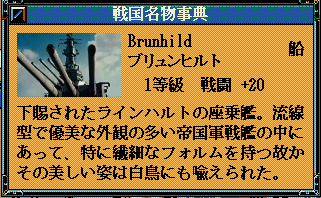

<div class="content-box mb-3 content-lighten">
    <h2><i class="fa fa-file-video-o fa-fw"></i>動画による家宝画像</h2>
</div>
<div class="content-box mb-3 content-lighten">
    <h3>概要</h3>
    <p>天翔記では家宝は静止画ですが、動画に対応するものとなります。</p>
    </p>
</div>
<div class="content-box mb-3 content-lighten">
    <h3>ダウンロード</h3>

    <div class="card mb-3 ml-3" style="max-width: 30rem;">
        <!-- カード本文：card-body -->
        <div class="card-body text-center">
            <div class="row">
                <div class="col-12"><small>更新日 %(year)04d/%(mon)02d/%(mday)02d</small></div>
            </div>
            <a href="%(file)s" class="btn btn-primary"><i class="fa fa-download fa-fw"></i>kahou_24bit_movie.zip</a>
        </div>
    </div>
</div>
<div class="content-box mb-3 content-lighten">
    <h3>動作環境</h3>
    <p><a href="?page=nobu_mod_the_tsmod">TSMod</a>の導入が必要となります。</p>
</div>
<div class="content-box mb-3 content-lighten">
    <h3>使用方法</h3>
    <ul>
        <li>家宝の画像素材は、普通の画像だけではなく、「動画」でもかまいません。
        <li>通常のaviフォーマットであれば、再生が可能です。
        <li>zipファイルにあるものは、そのわかりやすいサンプルとなっています。<br>
            "kahou_24bit/EX" のフォルダに動画を置いてください。<br>
            対応する名前が付いた家宝(「大和」という家宝や、「インディアナ」、あるいは「ミズーリ」という家宝)を作れば、その動画が再生されます。<br>
            又、「画像」・「動画」ともに、以下のように、横幅サイズが変形した場合、画像最大幅100px程度までは、文字レイアウトが自動的に調整されます。<br>
            <br>
            <br>
    </ul>
</div>